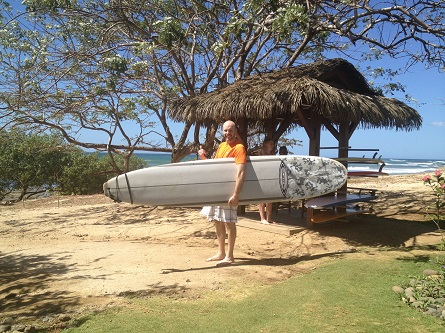

Over 14 days we visited three very different regions in Costa Rica.
We experiened the cloud forest, an active volcano, and the sands of the Pacific Ocean beaches.
We flew into San Jose, Costa Rica's capital, and out of Liberia.
We stayed at the follwoing hotels which are also shown on the map below:
El Silencio is an eco resort located in the higher altitude, central region of Costa Rica.
The area is a rain forest however the high elevation and humid climate allow for clouds and fog to roll through on a consistent basis which
is why the area is called the "cloud forest". The most memorable part of our stay in this area was the water fall also named Bajos del Toro.
The pictures below show the waterfall from top of the trail that we hiked down to reach the base of the waterfall. There were more than 250 "stairs" that we had to walk down,
then back up. Our guide prepared a refreshing snack of pineapple before we hiked back up. It was well worth the effort.
Tabacon Thermal Resort
Hot Springs and Zip Lines
Tabacon Thermal Resort is located at the base of the still active Arenal Volcano. The volcano is actually what creates the natural thermal hot springs located in the resort.
We spent our days being active and our evenings relaxing in the hot springs. My fondest memory from our stay at Tabacon was ziplining 300' above the canopy with the
Arenal Volcano in the background.
JW Marriott
Maximum Relaxation
The final 4 days of our trip were spent relaxing pool and ocean side at the JW Marriott resort in Gunanacaste. Learning to surf was our pinnacle of activity.
The sunsets were amazing.

Heading Home
All Good Things Come to an End
After 14 days in paradise it was finally time to go home. I highly recommend Costa Rica as a vacation destination. The people are friendly and now Southwest
flies to San Jose and Liberia. We will definitly be back!